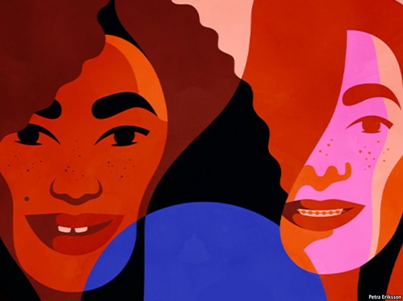

2021-01-12T16:07:12+00:00
【首文】儿童
让女孩健康成长
女孩们的状况比以往任何时候都好。别让疫情阻碍她们成长

在人类历史上的大部分时间里，在许多地方女孩都被视为他人的财产。或者最好的情况也不过是处于从属地位的人，要顺从她们的父亲，直到某天要开始顺从丈夫。很少人觉得她们有受教育的价值。预期一个女孩长大后可以治理德国、管理国际货币基金组织或者发明疫苗的就更少了。
在世界大多数地方，如此看待女孩在今天已不仅仅显得陈腐了，而是久远得难以想象。大部分富裕国家的父母现在对待女儿跟对待儿子一样好，对其未来的投资也一样多。在一个又一个领域，女孩已赶上男孩。全球范围内，在读大学女生的人数超过了男生。转变的速度非常惊人。50年前，中低收入国家小学适龄女孩的入学率为49%，男孩为71%，如今两者比例均为90%左右。1998年，全球只有一半的中学适龄女孩入学，而现在为三分之二。同一时期，15至24岁年轻女性的文盲率从五分之一降至十分之一，与年轻男性的比例大致相当。
女婴比以往任何时候都更受欢迎。一些国家的父母更喜欢女婴。即使在像中国这样一直大量存在做性别筛选而堕掉女胎的地方，这种情况往往也在减少。未成年女孩被嫁掉的比例也降低了。1995年，南亚几乎每10个女孩中就有六个在18岁之前结婚，现在这一比例已下降了一半。全世界范围内，这一比例已从四分之一降至五分之一。
女孩也变得更健康了。与上世纪90年代中期相比，她们进入性活跃期的时间延迟了，而且更可能使用避孕药具。少女怀孕率在全球范围内下降了四分之一，在南亚和北美均下降了三分之二。女孩遭受生殖器切割的几率在下降，也更敢于发声反抗这种可怕的习俗。2000年，在这种习俗最严重的地区只有27%的妇女和女孩认为应该禁止它，而今天为54%。
当社会处理好女孩的成长时，会有惊人的连锁效应。一个完成了中学学业的女孩接受童婚或者成为少女妈妈的可能性会降低。教育能提升她的收入能力并扩大选择范围，也就可以降低陷入贫穷或遭受家暴的几率。她的收入将是没受过教育的女孩的近两倍。
她还会把大量优势传给后代。她会少生优生，在子女身上投入更多。她的孩子更不可能夭折或身心发育不良。她会读更多的书给孩子们听，能辅导他们做作业。这都意味着小孩会学到更多，长大后能挣更多钱。花旗集团和国际计划组织（Plan International）近期的一项研究估计，如果一批新兴经济体能确保让全体女孩都完成中学学业，那么到2030年它们的GDP将能持续提升10%。
培养女孩的好处这么大，一些国家却依然不能把握，实在糟糕。在南亚、中东或非洲，只有不到一半的女孩能获得她们可能想要的避孕药具。在撒哈拉以南，每三个女孩里只有一个能完成中学学业。虽然南亚的童婚率降低了一半，但降幅低于非洲（非洲是目前世界上童婚率最高的地区）；拉丁美洲和加勒比地区的童婚率未见改善。
新冠疫情可能阻碍甚至逆转贫穷国家在女孩问题上的进步。在以往的灾难中她们往往受害最严重。2014年，埃博拉疫情迫使西非的学校关闭，许多女孩辍学，之后再也没有重返校园，最终怀孕或成为童工。联合国儿童基金会警告，在新冠疫情中可能发生类似的事，而范围会更大。研究表明，未来十年可能会发生1300万桩本可避免的童婚，以及200万名女孩被切割生殖器。
倒退的风险切实存在。所以至关重要的是，即使穷国政府不得不勒紧裤腰带，也要优先考虑教育和女孩方面的支出。捐助者也应伸出援手。而政策应相互配合。劝说女孩延长在校时间不仅仅是为教她们数学，也是让她们有机会接种疫苗，教她们避孕、以自主自愿的“同意”原则行事，以及表达自我主张、伸张自身权益。这甚至也是向父母忠告童婚弊端的机会。
青春期对女孩来说是个关键时刻。许多健康问题会在这段时期出现或者得以避免，从逃学到自残的许多社会问题也一样。直到最近，这一阶段才被认为是继婴儿期之后大脑发育的最重要阶段。如果能妥善对待，几十亿女孩将有更好的机会发挥自己的潜能。做得不好，她们会更贫穷，更短寿，更难以保护自身利益，更易受到胁迫，也更可能把这些不利因素传给下一代。所以，请让女孩健康成长。
2021-01-12T16:07:12+00:00
Children
Getting girlhood right
Girls are doing better than ever. Don’t let the pandemic stymie them
FOR MUCH of human history and in many places, girls were considered property. Or, at best, subordinate people, required to obey their fathers until the day they had to start obeying their husbands. Few people thought it worthwhile to educate them. Even fewer imagined that a girl could grow up to govern Germany, run the IMF or invent a vaccine.
In most of the world that vision of girlhood now seems not merely old-fashioned but unimaginably remote. In much of the rich world parents now treat their daughters as well as they do their sons, and invest as much in their future. In field after field girls have caught up with boys. Globally, young women now outnumber young men at university. The speed of change has been blistering. Fifty years ago only 49% of primary-school-age girls in lower-middle-income countries were in school, compared with 71% of boys; today the share of both is about 90%. In 1998 only half the world’s secondary-school-age girls were enrolled; today two-thirds are. Over the same period rates of illiteracy fell from one in five young women aged 15-24 to one in ten, bringing them roughly on a par with young men.
Girl babies are more wanted than ever before. Parents in some countries prefer them. Even in places, such as China, where the sex-selective abortion of girl fetuses has been rife, it is often becoming less so. Girls are also less likely to be married off in childhood. In 1995 almost six in ten girls in South Asia were hitched before reaching 18; that ratio has fallen by half. Around the world, it has fallen from one in four to one in five.
Girls are healthier, too. Compared with the mid-1990s, they become sexually active later and are more likely to use contraception. Rates of teenage pregnancy have fallen by a quarter globally and by two-thirds in South Asia and North America. Girls are less likely to suffer female genital mutilation—and object to this horrific tradition more vocally. Whereas in 2000 just 27% of women and girls in the most-affected regions said it should be banned, today 54% do.
When societies handle girlhood well, the knock-on effects are astounding. A girl who finishes secondary school is less likely to become a child bride or a teenage mother. Education boosts earning power and widens choices, so she is less likely to be poor or to suffer domestic abuse. She will earn almost twice as much as a girl without schooling.
And she will pass on a smorgasbord of advantages to her offspring. She will have fewer children, and invest more in them. They will be less likely to die in infancy, or to grow up stunted physically or mentally. She will read to them more, and help them with their homework. All this means they will learn more, and earn more as adults. A recent study by Citigroup and Plan International estimated that, if a group of emerging economies ensured that 100% of their girls completed secondary school, it could lead to a lasting boost to their GDP of 10% by 2030.
Because the benefits of nurturing girls are so large, it is a scandal that some countries have still failed to grasp them. Less than half the girls in South Asia, the Middle East or Africa have access to the contraception that they may want. Only one girl in three south of the Sahara finishes her secondary education. And although rates of child marriage have fallen by half in South Asia, they have fallen by less than that in Africa (which now has the highest rate in the world) and have remained stagnant in Latin America and the Caribbean.
The covid-19 pandemic could hobble progress for girls in poor countries, or even reverse it. During previous disasters, they have often suffered most. When Ebola forced west African schools to close in 2014, many girls dropped out, never went back and ended up pregnant or as child labourers. UNICEF warns that something similar could happen with covid-19—but on a larger scale. Studies suggest that in the next decade 13m child marriages that would have been averted may go ahead, and an extra 2m girls may have their genitals cut.
The risk of regression is real. So it is crucial that, even if governments of poor countries have to tighten their belts, they prioritise spending on education and girls. Donors should help, too. And policies should be joined up. Persuading girls to stay in school longer is not only a way to teach them maths; it is also a chance to vaccinate them and teach them about birth control, consent and self-assertion. It can even be an opportunity to advise parents about the downsides of child marriage.
Adolescence is a crucial juncture for girls. It is when many health problems emerge or are averted; and many social ones, too, from truancy to self-harm. Only recently has this phase been recognised as the most important for brain development after infancy. Get it right and billions of girls will have a better shot at fulfilling their potential. Get it wrong and they will live poorer, shorter lives, less able to stand up for themselves, more vulnerable to coercion, and more likely to pass these disadvantages on to the next generation. So, get girlhood right. ■
2021-01-12T16:07:12+00:00
【首文】兒童
讓女孩健康成長
女孩們的狀況比以往任何時候都好。別讓疫情阻礙她們成長
在人類歷史上的大部分時間裡，在許多地方女孩都被視為他人的財產。或者最好的情況也不過是處於從屬地位的人，要順從她們的父親，直到某天要開始順從丈夫。很少人覺得她們有受教育的價值。預期一個女孩長大後可以治理德國、管理國際貨幣基金組織或者發明疫苗的就更少了。
在世界大多數地方，如此看待女孩在今天已不僅僅顯得陳腐了，而是久遠得難以想象。大部分富裕國家的父母現在對待女兒跟對待兒子一樣好，對其未來的投資也一樣多。在一個又一個領域，女孩已趕上男孩。全球範圍內，在讀大學女生的人數超過了男生。轉變的速度非常驚人。50年前，中低收入國家小學適齡女孩的入學率為49%，男孩為71%，如今兩者比例均為90%左右。1998年，全球只有一半的中學適齡女孩入學，而現在為三分之二。同一時期，15至24歲年輕女性的文盲率從五分之一降至十分之一，與年輕男性的比例大致相當。
女嬰比以往任何時候都更受歡迎。一些國家的父母更喜歡女嬰。即使在像中國這樣一直大量存在做性別篩選而墮掉女胎的地方，這種情況往往也在減少。未成年女孩被嫁掉的比例也降低了。1995年，南亞幾乎每10個女孩中就有六個在18歲之前結婚，現在這一比例已下降了一半。全世界範圍內，這一比例已從四分之一降至五分之一。
女孩也變得更健康了。與上世紀90年代中期相比，她們進入性活躍期的時間延遲了，而且更可能使用避孕藥具。少女懷孕率在全球範圍內下降了四分之一，在南亞和北美均下降了三分之二。女孩遭受生殖器切割的幾率在下降，也更敢於發聲反抗這種可怕的習俗。2000年，在這種習俗最嚴重的地區只有27%的婦女和女孩認為應該禁止它，而今天為54%。
當社會處理好女孩的成長時，會有驚人的連鎖效應。一個完成了中學學業的女孩接受童婚或者成為少女媽媽的可能性會降低。教育能提升她的收入能力並擴大選擇範圍，也就可以降低陷入貧窮或遭受家暴的幾率。她的收入將是沒受過教育的女孩的近兩倍。
她還會把大量優勢傳給後代。她會少生優生，在子女身上投入更多。她的孩子更不可能夭折或身心發育不良。她會讀更多的書給孩子們聽，能輔導他們做作業。這都意味着小孩會學到更多，長大後能掙更多錢。花旗集團和國際計劃組織（Plan International）近期的一項研究估計，如果一批新興經濟體能確保讓全體女孩都完成中學學業，那麼到2030年它們的GDP將能持續提升10%。
培養女孩的好處這麼大，一些國家卻依然不能把握，實在糟糕。在南亞、中東或非洲，只有不到一半的女孩能獲得她們可能想要的避孕藥具。在撒哈拉以南，每三個女孩里只有一個能完成中學學業。雖然南亞的童婚率降低了一半，但降幅低於非洲（非洲是目前世界上童婚率最高的地區）；拉丁美洲和加勒比地區的童婚率未見改善。
新冠疫情可能阻礙甚至逆轉貧窮國家在女孩問題上的進步。在以往的災難中她們往往受害最嚴重。2014年，埃博拉疫情迫使西非的學校關閉，許多女孩輟學，之後再也沒有重返校園，最終懷孕或成為童工。聯合國兒童基金會警告，在新冠疫情中可能發生類似的事，而範圍會更大。研究表明，未來十年可能會發生1300萬樁本可避免的童婚，以及200萬名女孩被切割生殖器。
倒退的風險切實存在。所以至關重要的是，即使窮國政府不得不勒緊褲腰帶，也要優先考慮教育和女孩方面的支出。捐助者也應伸出援手。而政策應相互配合。勸說女孩延長在校時間不僅僅是為教她們數學，也是讓她們有機會接種疫苗，教她們避孕、以自主自願的“同意”原則行事，以及表達自我主張、伸張自身權益。這甚至也是向父母忠告童婚弊端的機會。
青春期對女孩來說是個關鍵時刻。許多健康問題會在這段時期出現或者得以避免，從逃學到自殘的許多社會問題也一樣。直到最近，這一階段才被認為是繼嬰兒期之後大腦發育的最重要階段。如果能妥善對待，幾十億女孩將有更好的機會發揮自己的潛能。做得不好，她們會更貧窮，更短壽，更難以保護自身利益，更易受到脅迫，也更可能把這些不利因素傳給下一代。所以，請讓女孩健康成長。